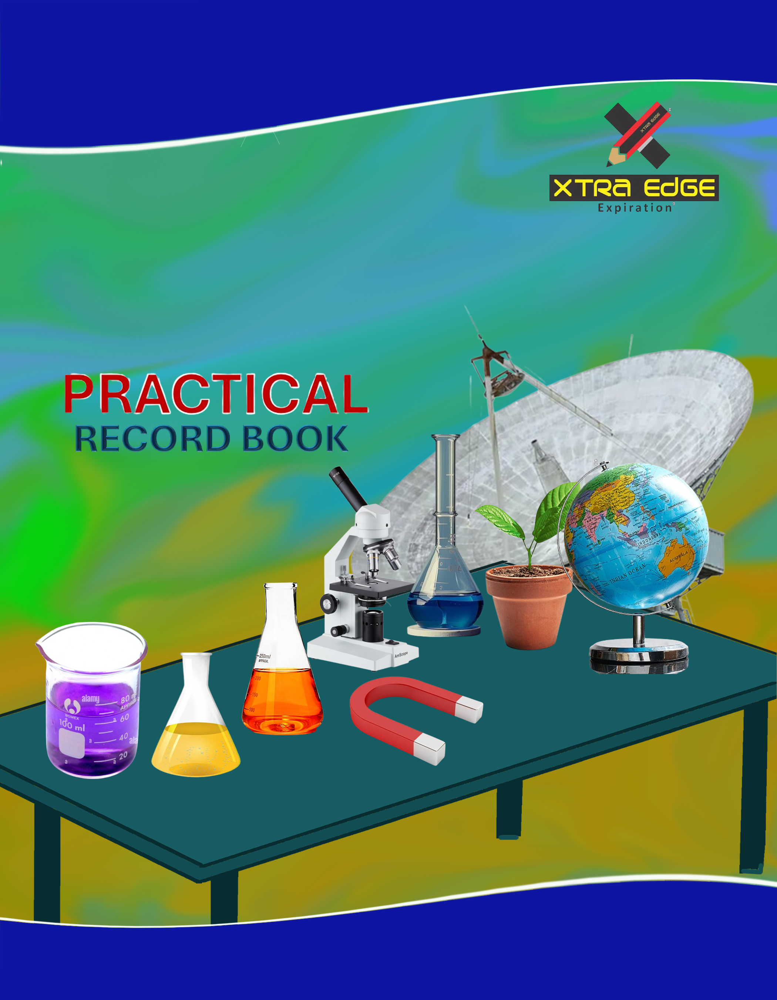
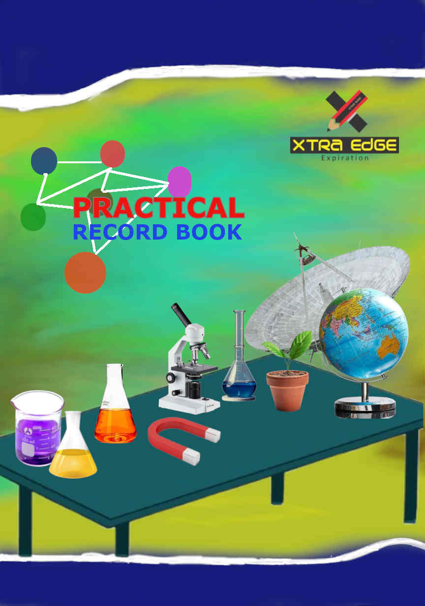
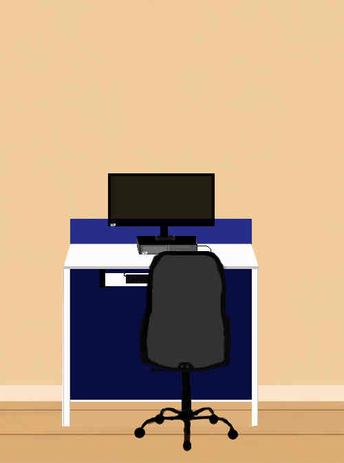

Practical Record Book Cover
Cover page design created for the practical record book.
MEDIA CATEGORY
Image editing and design projects
PROJECT GALLERY

Cover page design created for the practical record book.

Record book cover with custom multimedia branding.

Workspace scene illustration and composition.
WORKFLOW